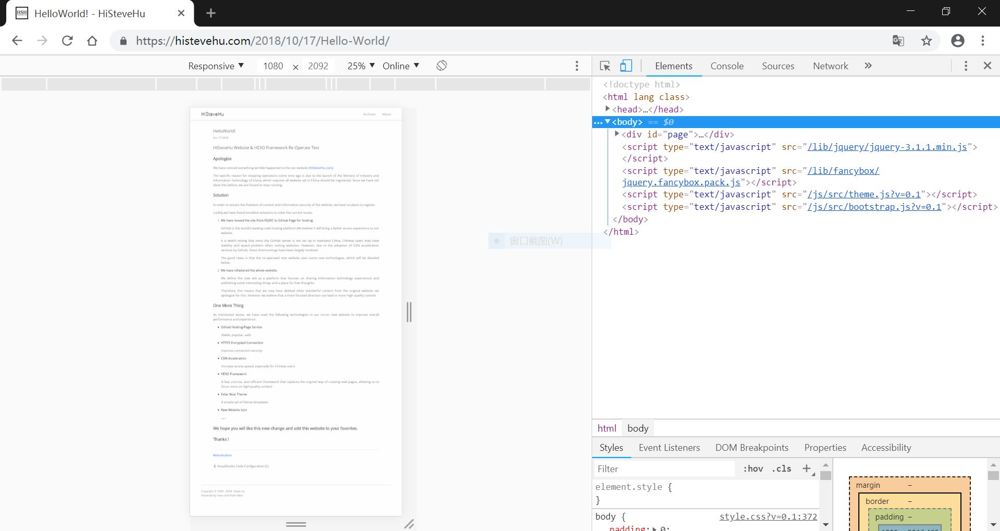
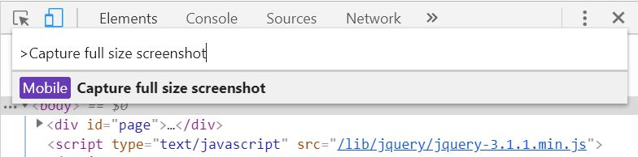
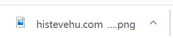

如何使用Google Chrome原生功能对整个网页截图 Oct 27 2018 简介有很多方法可以截取网页截图。 使用系统附带的屏幕截图软件或Chrome扩展程序。 在这里，我们想分享一种更方便，更先进的方法。 与其他方法相比，它： 1.只需要Chrome，不需要其他Chrome扩展程序2.从渲染输出，更好的拍摄质量 步骤 浏览长网页时，按 F12 进入Chrome开发者模式。  按Shift + Ctrl + P 打开命令文本框，输入命令： 1Capture full size screenshot 回车  Chrome会自动保存这个网页截图。 